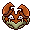
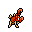
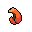
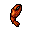
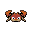

Pokédex / #098

Krabby #098
Water
It can be found near the sea. The large pincers grow back if they are torn out of their sockets.
Generation 1 · Kanto

Stats
| Attack | 105 | |
|---|---|---|
| Defense | 90 | |
| Sp. Atk | 25 | |
| Sp. Def | 25 |
In the wild
| Wild level | 5–15 |
|---|---|
| HP | 30 |
| Experience | 7 |
| Egg groups | Water 3 |
Evolution
- Evolves into Kingler at level 35.
Moves
| Level | Move | Type | Category | Power | Energy | Cooldown | Effect | |
|---|---|---|---|---|---|---|---|---|
| 1 | Tackle | Normal | Physical | 15 | 15 | 1s | Tackle is one of the most common and basic moves a Pokemon learns. It deals damage with no additional effects. | |
| 5 | Bubble | Water | Special | 10 | 40 | 3s | Bubble deals damage and has a 10% chance of lowering the target's Speed by one stage. | |
| 10 | Mud Shot | Ground | Special | 55 | 60 | 9s | Mud Shot deals damage and lowers the target's Speed by one stage. | |
| 15 | Stomp | Normal | Physical | 65 | 75 | 9s | Stomp deals damage and has a 30% chance of causing the target to flinch. | |
| 20 | Brine | Water | Special | 65 | 80 | 15s | Brine inflicts damage, and its power doubles to 130 when the target is at or below 50% health. | |
| 25 | Harden | Normal | Status | – | 70 | 60s | Harden raises the user's Defense by one stage. | |
| 30 | Crabhammer | Water | Physical | 100 | 100 | 14s | Crabhammer deals damage and has an increased critical hit ratio. |
Field abilities
DigStrengthRock SmashHeadbuttCut
Special abilities
Hyper CutterShell Armor
Egg moves
AgilityAlly SwitchAmnesiaAncient PowerBideChip AwayEndureFlailHazeKnock OffSlamTickle
Technical machines
BideBlizzardBody SlamBrick BreakBubblebeamDouble EdgeDouble TeamFury CutterHailHeadbuttIce BeamIcy WindMimicMud SlapRageRain DanceRestRock SlideRock TombSoftboiledSubstituteSwords DanceTake DownToxicWater GunWater Pulse
Drops
| Item | Amount | Chance | |
|---|---|---|---|
| water gem | 1 | 100% | |
| pincer | 1 | 20% | |
 | crab claw | 1 | 14.3% |
| blueberry | 1–3 | 5% | |
 | crab pincer | 1 | 3.33% |
 | krabby doll | 1 | 0.1% |
| Splash Plate | 1 | 0.002% |